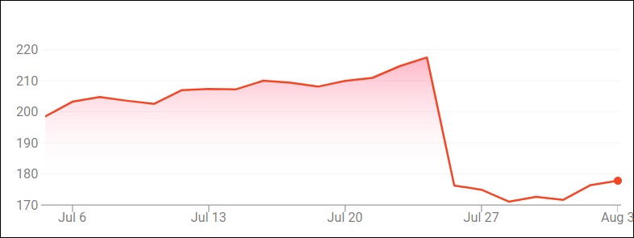

The recent downfall of Facebook stock and its data privacy fiasco have been spectacular, and saddening. People are talking about data privacy as if it is an evil just releases from Gene's bottle, and of course, when a giant like Facebook shows a crack, millions are worked up to bring it dow, for its great tragedy that years later all MBA books and zillion talks on evolution of technology will have a lot of fun to awe its audience, and for profiting from such a downfall if only it is so predictable and exciting, like any revolution that mobs are bringing down the ruling authority and everyone sees an opportunity to reshuffle the social deck he or she has been given, and maybe this time a better card will be in hand.
All in all, this is a true irony, that the social networking giant is facing a social force that it both created, and in an arena he is the king.
But really, what I want to talk about is something even more
fundamental than privacy, and more worthwhile to debate and reflect,
if not alarmingly being too little, too late. Because over the last 10
years, the word social networking has been hailed as the gospel of
the future, but truly this was done more genuinely than what is of
those buzz words flooding the media nowadays such as AI, big data
anaylsys, or sharing economy, since it does touch something core to
human existence, on which I will be discussing in this essay.
Social media and social networking have indeed transformed communication method that people are device-savy are engaging. Not only it is convenient to talk to your dad and mom internationally or nationally; it has become a forum of ideas, opinions, life in a real-time sense, and manifested and recorded in a degree that has never happened and possible in the past. One hundred or one thousand years later historians and researchers will face an overwhelmingly amount of day-to-day or even minute-to-minute data to reconstruct what our life in year 2018 is like. No more speculation and guess work from some books written decades since the even happened, and from debris or broken pieces of archaeology artifacts to derive/reverse-engineer what is like. If assuming that data is still readable then, and data is processable and understandable then, then this generation must be the one that has been mostly documented, recorded, manifested as if everyone is on a stage, hunger for information and for attention.
I'm not a fan of posting my life, nor a fan seeing alerts/updates of someone I know has just left for lunch, or having a cup of coffee, everyday at this time. But it' ok if you like to make your life known, however the side you choose to show, prefer to be remembered, and be eager to run away from. I have no problem with this at all. But there is other things of social networking that I feel deserve much attention, which unfortunately has not been given by media, by public, by private citizen, by everyone whose reference of daily life and meaning is being changed by them.
torturing yourself
Watching any wechat user, or any of the 13 billion Chinese walking on the street, standing on escalator, sitting somewhere, eating, riding a subway, climbing stairs, dating with friends, gathering with family, participating a meeting, talking to client or boss or whoever, toileting... if driving and texting is bad, then I think shitting and wechatting is disgusting, disturbing, humiliating, bizzare, degrading, unhealthy, and utterly covering your beloved phone with germs and god knows what, and for no good reason whatsoever.
Because if you are only willing to take one step back out of this fantastic high of constant suspension (yes indeed this is the suspense movie you are starring!), I highly suspect any part of your life is living such a cutting edge and importance that it can not be missed, even for a few minutes. Really, even God rests on Sunday, whom do you think you are!?
This level of anxiety, yes, if you are a social networking user,
you are anxious, is just bizzare! This is worse than mid-age
crisis, because it does not care whether your true age is mid or
not. The anxiety to see a response to your message in a bottle is
getting to your nerve &mdas; oh mine mine mine, did s/he say something
to my post? ... oh nothing yet... <20 seconds later> .... didn't I
feel the phone just lighted up? there is new message!....<20 seconds
later>... maybe it's here now... I'm always watching such strange
reality show with an urge to laugh and to pity — at the end of
day, why put yourself through such a misery by torturing yourself with
anxiety, by caring so much how others react to you, how they comment
on a conversation, how they view your activity, how they think about
you, how they like or dislike you!?
I understand the argument that as a social member, as all human are meant to be one, and gively I agree with this statement, thus a person must care about others' view of you, makes a kind gesture to fit in, and be a good citizen ← it's duty, built-in requirement, thus inevitable, necessary, and justified.
I get it. I'm not against human society, relationship, even though I'm quite anti-social these days that I don't enjoy hanging out with people I don't enjoy hanging out with, and I don't give a fxxx who the fxx this person is if s/he is someone I'm interested in knowing, am happy to be with, and am willing to have a relationship. But really, often than not I think this argument is only borrowed by the person to justify his checking-my-phone-every-20-seconds behavior. Fundamentally, s/he take herself/himself too seriously. Universe is rotating around her, thus if you have not yet responded to her message, you must be composing it as we speak, or must be digesting her meaningful words and formulating a reply in mind... either way, your mind is occupied by this input, and should display CPU 100% on all cores, and all memory used up!
But the reality is, how many people in your life you would care so much!? I know one, and you probably have, whatever, a few, a dozen?.... it won't be many, that's the point, because if there are many, then you are either playing a God's role, or you are treating them equally shittyly, because you don't know what care means. So, now take a flip side of this, how many would consider you as that person s/he cares!? Equally, the odds is pretty low. So really, if you feel otherwise, either you are in love, or you are in a high and refusing to wake up.
This is not some dark theory I'm proposing on human. This is how human emotion is — emotion is an expansive item to have, it take s tremendous energy, space, life. Most of us so called common people simply have no such capacity to create that much caring and love that can drive and support the type of anxious-of-your-response pattern! We just can't, and will not.
Therefore, bringing such an anxiety on yourself is completly rootless, and can only be viewed as a sign of poor judgement of yourself, your social networking participants, and the word
relationshipin general.
slowing down your brain
Another effect of social media, and enabled by technology, is that
your day is becoming a long list of [20, 20, 20, 20......] (in
seconds). Not only the anxiety and disappointment of not seeing a
response tortures your mind, this pattern forces your brain to
constantly doing a context switching ← ask your IT friend,
if he is worth his salt, he will know the conclusion, that context
switching is expansive. It is necessary, but any designer will show
his smartness by avoiding unnecessary switching whenever
possible. This is not just a technical talk of optimization; this is
basic principle, because at the end of day, your brain is what defines
you, no one yet I know of is willingly to be called "slow", or
"stupid", and we often laugh at animals such as Dash (Zootopia)
because he reacts slooooooooowly!
Then why the heck you want to slow down your brain by forcing it to context switching every 20 seconds!!!!????
Isn't this, stupid, or what!?
prisoner of diversity
Have your noticed, heard, and must have experienced, that by so called
user profiling backed by big data analysis and AI, that on one hand
you don't need to bother with Amazon search much at all, since all the
products you bought, often buy, likely to be interested, aligned with
your shopping cart history, derived from what they know about your
needs, your taste, your life, are right there! How convenient!
Then, at the same time, Youtube becomes static, any recommendation of the sort described above becomes, STATIC. You are seeing recommendations as your top choice, and the more you choose from them, well, the stronger a belief that you do like this type of stuff! → this is becoming completly self-propelling and self-fullfilling!
This actually proves a point I have longed to state, that when information becomes overwhelmingly abundant, a person will be saturated (again, see my brain analysis in previous section), thus his only method to handle this is to limit inputs, thus we are seeing proliferation of the reader's digest of book club dressed in name of condensed information (or even more shamelessly, educator in a 21st form, give me a break!!), and also, profiling. Both share the same characteristics that please make a decision for me — you know, I'm not sure they are doing anything wrong while writing this line, because I suspect human, or most people, are just lazy, they don't like to think, to explore. I think this is explained by my context switching argument above!!! How nice!
So well, my point is that these so called recommendations and what-you-know-about-me (even-better-than-myself!) urban myth, are putting us into a prison of diversity of views. Our inputs are converging, willingly and unknowingly, thus our outputs will also converge, which re-inforces the legitimacy of those choices given to us, not chosen by us.
If you enjoy anxiety, this is actually something worth feeling anxious about — that we are losing not only the ability to choose, but the options to choose from. In today's social networking high, we are feeling not too few, but too many choices. But if not careful, this exactly fact is driving us into the other extreme, that we will still have more than ever to choose from, just they are becoming the same!!
Remember Ford's T-model? that we can make it any color you want, as long as it is black.
Wow.
who am I, and who are you
If I have not scared you up to this point, there is one more thing that social networking has done a wonderful job that is even more spectacular than smashing your waking time to pieces — it has smashed yourself into pieces.
Every person is a unity of God knows how many different persons in one body — there is part of you who loves badminton, another part who loves music, another who loves books, another who loves woman or man or whatever, another who enjoys computer, another who loves family, another who cares your ex girlfriend(s), ..... you get the picture. There isn't, has never been, a single YOU. There has always been a bundle of different you, that is being simplified, labeled as, you.
What the social networking does is to bubble these sides of you up and manifest them so that now you are member of a history group because you all love reading history books, a member of the kids club because all of your kids are rising 4th grade, a member of this interest group, a member of that, a member of ..... so what used to be a blob of blur, a feel and a preference that is fuzzy, hard to define and hard to describe, now social networking computers have built abstracts and database models to define them precisely and accurately (remember, they know better of yourself than you do), and all these sides are now clearer than ever, almost even defined, and certainly visible, and you are actively aware of their existence.
While you are excitingly discovering yourself and finding it
satisfying that these many sides of you have all found its groups, you
have also submitted yourself to be re-defined in a modular
fashion. The good news is that this is exactly how dating app works,
that you fill in a form to describe you, and computer uses these
attributes of you to match for literally a percentage of
similarity — you two have 80% in common in term of hobbies! wow,
very likely you will like each other! Actually, this, if not
deciphering the mystery of LOVE, is helping to improve the odds of
initial success (well, initial is hard, but a success in marriage is
much much harder, and odds by looking at court filings doesn't look
encouraging).
But then, what is a marriage anymore, if I'm only loving the 20% of you!? or even 80%, 90%!? What about the 10% left!? Do I seek to satisfy that outside the marriage? Is it then justified for me or for you to do so? After all, look, math is pretty clear here, 100% overlapping is an impossibility, so we all have to live with a gap here — this actually feels right, because we have all know that no one is perfect, and some will even take this further to state that no one is perfect for you... haha....
Well, so when I talk you next time, or work with you, or having a coffee, which part of you am I talking to? looking at? having a relationship with? Do I even need to ask or confirm or request that a particular side of you is the one I want to talk to, to love, to care? and even with such possibility, what if you disagree, but willing to give me the "I love fashion" side of you to be with my "let go for a movie" side of me!? Is this a mismatch? or just fine?
This is just, weird.
— by Feng Xia